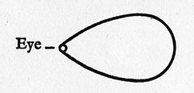
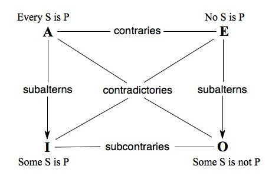
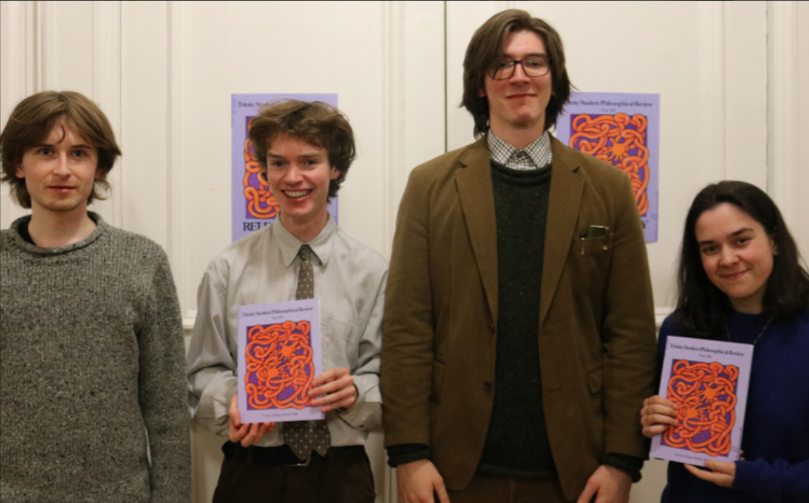

Philosophy | Independent Researcher
I am a philosopher based in Ireland, recently graduated with First Class Honours in Mathematics & Philosophy from Trinity College Dublin. I hold a deferred offer to pursue an MLitt at the University of St Andrews.
My research concerns the philosophy of logic and language — particularly questions of existential import, quantification, and ambiguity in the categorical forms — alongside the philosophy of mathematics (infinity, cardinality, and foundations) and metametaphysics. I have a secondary interest in ancient philosophy, especially Plato's metaphysics and Aristotle's logic, and their relation to the contemporary analytic tradition.
I am currently working on several papers and preparing for conference presentations in Salzburg and (pending) Potsdam and Istanbul.



Email: robertmfinan7@gmail.com
Phone: +353 89 257 8392